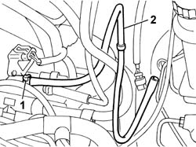
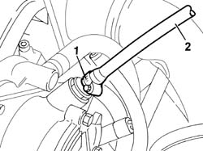
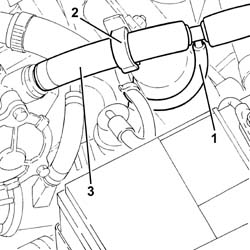

3330D24 vacuum pipe for brake servo - r+r
- Path
- Procedures > 33 BRAKES > 3330 HYDRAULIC BRAKE SYSTEM > 3330D brake vacuum system > 3330D24 vacuum pipe for brake servo - r+r
- Kind
- repair procedure (removal / refitting; the operation number is the code)
- Applies to
- engines: 1.2 8v, 1.9 JTD 8V, 1.9 DIESEL; all production periods
- Interactive page
- https://sloeber94.github.io/elrnDB-fDbl/en/#/2584671
Applies to: engines: 1.2 8v; all production periods
 Removing
Removing
 Refitting
RefittingOp. 3330D20 ONE-WAY VALVE FOR BRAKE SERVO - R+R.
1. Disconnect the brake servo pipe from the inlet manifold.
2. Remove the pipe from the engine compartment.

Applies to: engines: 1.2 8v; all production periods
Refitting
RemovingFit the vacuum pipe and connect to the inlet manifold by means of the relevant collar.
Applies to: engines: 1.9 DIESEL; all production periods
Removing
RefittingOp. 3330D20 ONE-WAY VALVE FOR BRAKE SERVO - R+R.
1. Disconnect the vacuum pipe from the vacuum unit.
2. Remove the pipe from the engine compartment.

Applies to: engines: 1.9 DIESEL; all production periods
Refitting
RemovingFit the vacuum pipe and connect to the vacuum pump by means of the appropriate collar.
Applies to: engines: 1.9 JTD 8V; all production periods
Removing
RefittingProceed with the removal
Op. 3330D20 ONE-WAY VALVE FOR BRAKE SERVO - R+R.
1. Disconnect the vacuum pipe for the vacuum reservoir from the T connector.
2. Release the vacuum pipe for the brake servo from the retaining band.
3. Loosen the band, disconnect the brake servo vacuum pipe from the vacuum unit and remove it.

Applies to: engines: 1.9 JTD 8V; all production periods
Refitting
RemovingConnect the brake servo vacuum pipe to the vacuum unit and tighten the band.
Fix the vacuum pipe for the brake servo to the securing band.
Conect the vacuum pipe for the vacuum reservoir to the T connector.
Proceed with the refitting